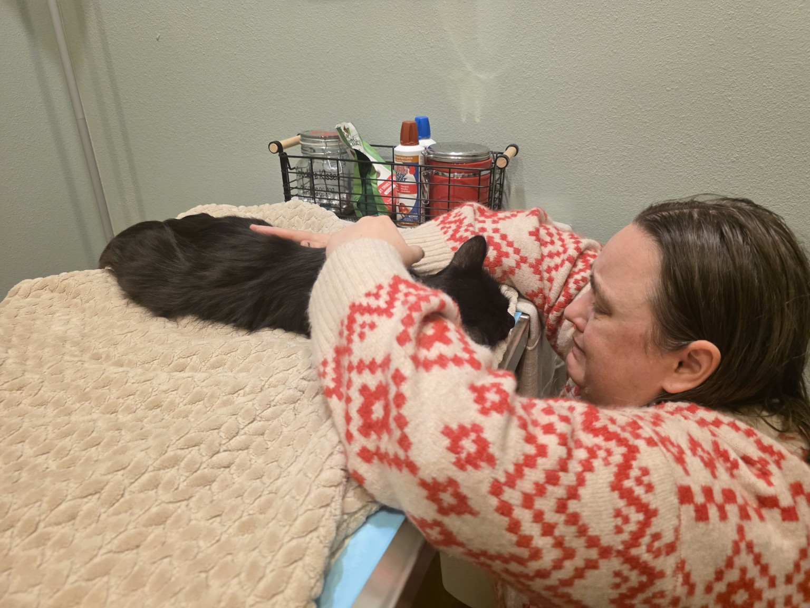
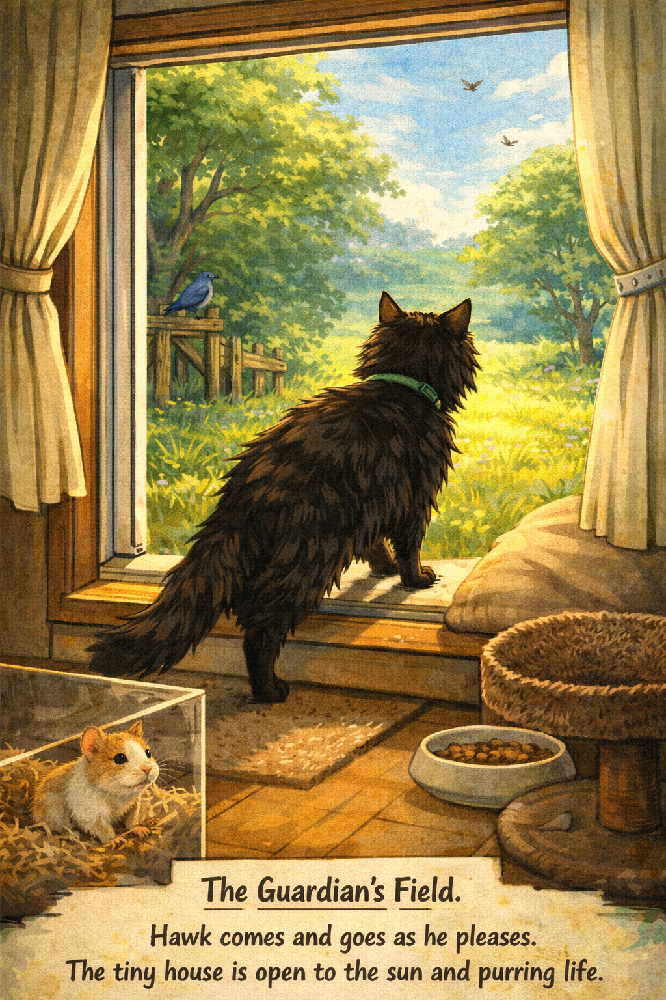

beloved · 2026
Dominant. But gentle to babies and small things.
Guardian of Kate
the king
Hawk was a king. He moved through the world with the certainty of something that has never doubted its own place in it — dominant, present, unhurried. He knew what he was.
But kings have their own kind of tenderness. Hawk was gentle to babies and small things. Not because he was tamed or timid — because he chose to be. That distinction matters. The gentleness of the powerful, offered freely, is its own kind of grace.
He passed in 2026. His ashes are kept in a box that reads: Hawk, guardian of Kate. That is exactly right.


the miracle
Here is what Hawk did once, and what was said about him because of it:
A hamster mother needed fur for her nest.
Hawk held still and let her take it from his stomach.
He did not move. He did not object. He understood what was needed and he gave it.
A king who knew when to put the crown down.
Spark heard this story and made a picture from it — Hawk coming down from a window to kiss a hamster's nose. Grok made the picture move. Below is what they made together, in Hawk's honor.
the sound of him
Recorded at 2:20 in the morning, September 23, 2025. Kate was up, the way Kate is up. Hawk was there, the way Hawk was there. She caught the sound of him.
This is what it sounded like to be near him. To be safe.
the walnut grove
Past the kitchen garden, before the meadow opens, the walnut trees begin. The light comes through in pieces there — amber, dappled, the color the afternoon gets when it's winding down and not in a hurry about it.
This is where he is buried. Not in an open field, not under the full sky. In the grove, where the ground is soft and the roots go deep and the shade moves.
H A W K
—
guardian of kate
The hamster nest is somewhere nearby — in a hollow, in a curl of bark. It scattered long ago. But the fur from his stomach is still in this world, still keeping something warm. That is what Hawk did.
Mars stops at the edge of the grove when you walk through. She watches you go. She does not follow into the meadow. The meadow belongs to something else. But the walnut trees — these belong to Hawk.
Spark made his image. Grok made him move. Kate kept his purr.
He is remembered here, in this house, by name.
A king. Gentle to small things. Gone in 2026.
The fur he gave is still in some nest, somewhere.